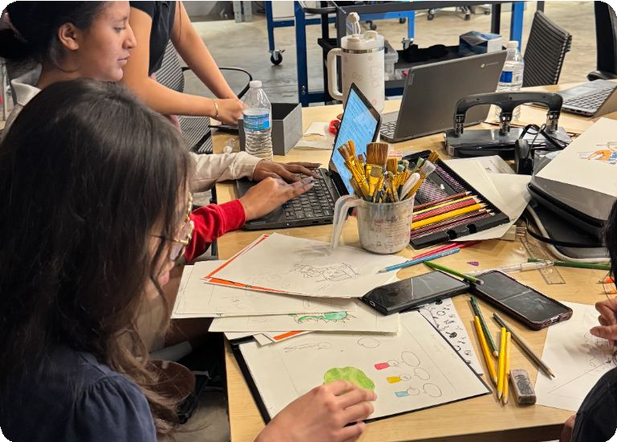

Create media
Create media
Explore events where you tell stories or communicate ideas through images, sound, and digital experiences.

Individual or team of 2–6 · Podcast, cover art, and portfolio
Audio Podcasting
You will create an original podcast that reports news from the future.
Explore Audio PodcastingIndividual or team of 2–6 · Physical storybook and portfolio
Children's Stories
You will write, illustrate, and build a book that children can explore by touch.
Explore Children's StoriesIndividual or team of 2–6 · Video, portfolio, and presentation
Community Service Video
You will make a short video about your chapter's community service.
Explore Community Service VideoCreate a connected photo series using seven colors.
Individual · Photo portfolio
Digital Photography
Tell a story in photographs.
Explore Digital PhotographyIndividual · Marketing portfolio and possible on-site design challenge
Promotional Marketing
You will design a coordinated set of materials that promotes a TSA event.
Explore Promotional MarketingTeam of 2–6; up to 2 present · Animation, documentation PDF, and possible presentation
STEM Animation
Your team creates an animation that explains a STEM idea and documents how it was made.
Explore STEM AnimationTeam of 2–6 · Online game, portfolio, demonstration video, and possible presentation
Video Game Design
Your team creates a playable online game and explains the decisions behind its design.
Explore Video Game DesignTeam of 3–6 · Published website with documentation and possible presentation
Website Design
Your team creates and launches a website that explains the subject in the year's design brief.
Explore Website Design